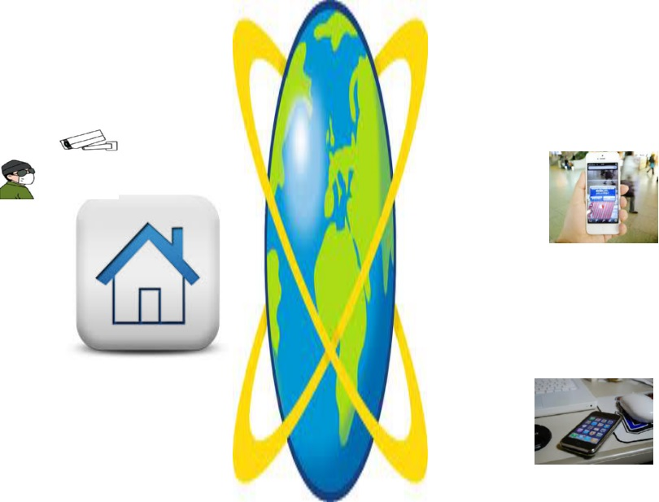
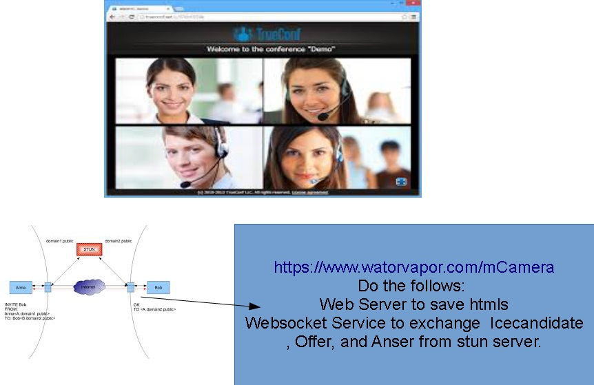

目標:
低価格カメラ付きAndroidテレビボックス、または使用しない携帯のカメラを再利用して、自宅の監視システムを構築してみる。 複雑な設定などいらない。
技術要素：
簡単にNATを超えるWebrtcの技術を使用する。
使って見る
A video introducing this type devices.

本サイト何かするか？
１．WebrtcのHTML、JSの置き場所（httpサーバー）
２．Stunサーバーの情報を交換するWebSocketサーバー。
